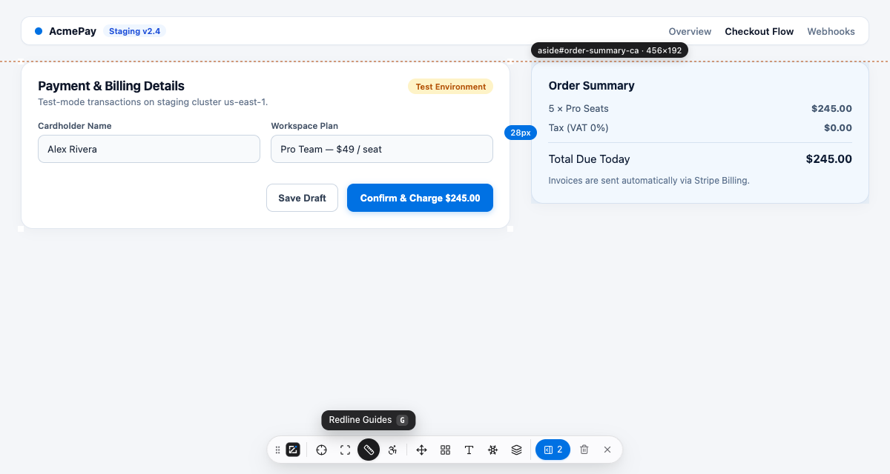

VisBug Toolkit & Diff-to-Pin
Measure redlines, audit WCAG contrast, and tweak layouts live without losing changes.
Inspired by Google Chrome Labs' ProjectVisBug, ZSpect brings visual design tools directly onto any live webpage—and solves VisBug's biggest limitation by recording every tweak into an undoable Before → After Diff attached to your Pin.

Visual tools reference
- GRedline Guides — Click an anchor element, then hover any second element to render pixel-exact distance pills and dashed alignment lines.
- AWCAG 2.1 Contrast X-Ray — Computes real effective background colors through transparent layers, reporting contrast ratio, AA/AAA status, ARIA role, and
< 44×44pxtouch target warnings. - P / MBox-Model Spacing Tuner — Select one or more elements and press arrow keys (
+1px,Shift+4px,Altnegative) to tune padding or margin with live box-model tinting. - FFlexbox & Sibling Reorder — Flip
row/column, change alignment, and move elements among siblings with←/→. - TLive Text Edit — Click any heading, button, or paragraph to test copy lengths inline and record exact text diffs.
- ⌘ZUndo / Redo & Reset — Step backward/forward through tweaks or reset all DOM mutations in one click.